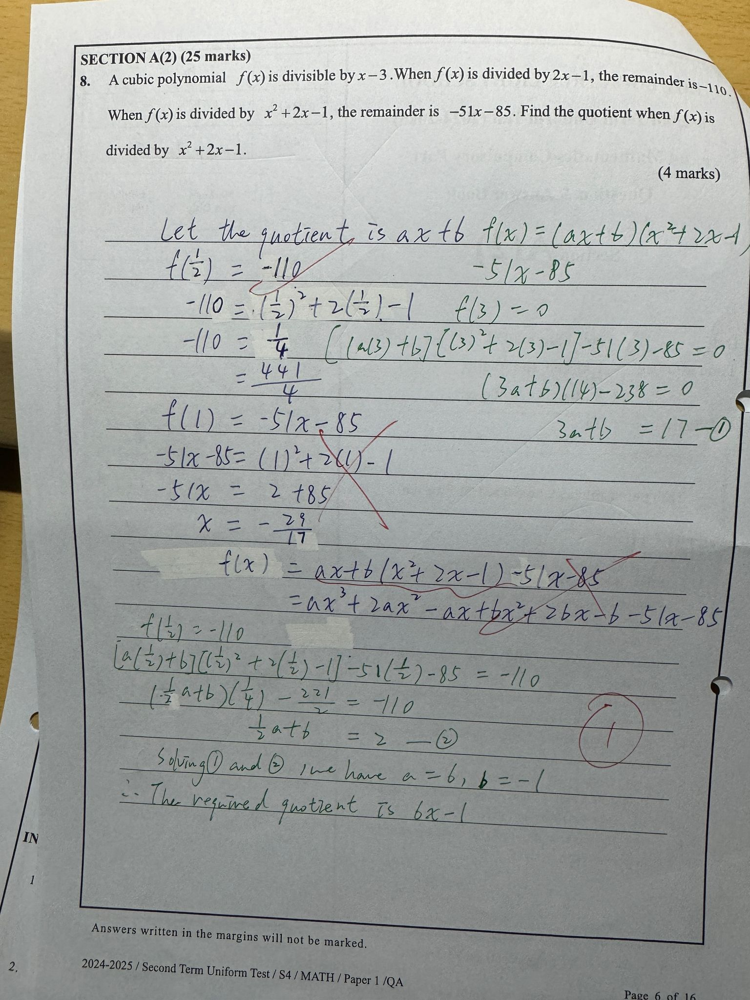

Factorization
- 抽公因數 Common Factor
- Group the terms into pairs.
- 三項式
- FMLA01
| 格式同上 | 部分同上 |
|---|---|
| let | 照抄，做fatorization |
Polynomial
- Degree of polynomial: >2次方 宜家學係31 Linear Equation
2 Quadratic Equation
- Polynomial function: f(x) = (Divisor)(Quotient)+Remainder
Dividend = f(x) Divisor Quotient Remainder Theorem f(x) is divisible by x-3 x-3 ax2+bx+c 0(divisible by) f(3)=0 When f(x) is divided by 2x-1, the remainder is -110. 2x-1 ax2+bx+c -110 f(1/2)=-110 - Coefficient of xn: xn 前面的數 Constant term: 常數,冇x的數
f(x)=-4x3+3x2x-1+k
g(x)=-kx+k2Terms -4x3 +3x2 x -kx -1+k k2 Coefficient of terms(x,x2,x3) -4 3 1 -k Constant term -1+k k2
2024/25 Second UT

1. Simplify
and express your answer with positive indices.
2.Factorize
(a) 4x-10y，
(b) 2x²-3xy-5y²
FMLA01
,
(c) 4x-10y-2x²+3xy+5y²部分一樣
3.Make n the subject of the formula .

4. A piece of wod is termed standard if its length is measured as 70 cm correct to the nearest cm.
(a) Find the least possible length of a standard wood.
(b) Someone claims that the total length of 59 piece of standard wood can be measured as 40 m correct to the nearest m. Do you agree? Explain your answer.
(a) Find the least possible length of a standard wood.
(b) Someone claims that the total length of 59 piece of standard wood can be measured as 40 m correct to the nearest m. Do you agree? Explain your answer.
5. In an animal centre, the ratio of the number of cats to the number of dogs is 9:8. If 9 cats and 6 dogs leave the centre, then the ratio of the number of cats to the number of dogs is 12:11. Find the total number of animals in the centre originally. (4 marks)
6. The
marked price of a mobile phone is 50% above its cost
.
A m=(1+50%)c
profit of $60 is made by selling the mobile phone at a discount of 30% on its marked price
.
Find the marked price of the mobile phone. (4marks)
60=s-c
s=(1-30%)m
60=(1-30%)m-c
s=(1-30%)m
60=(1-30%)m-c
7. Simplify .

8. A cubic polynomial f(x) is
divisible by x-3
.
f(3)=0
When f(x) is divided by 2x-1, the remainder is -110
f()= -110
.When f(x) is divided by x²+2x-1, the remainder is -51x-85.
Find the f(x)=(x²+2x-1)(ax+b)-51x-85
quotient
when f(x) is divided by x²+2x-1.
(4 marks)
(ax+b)
9. Billy bought a van which cost $800 000 in 2010. The value $P of the van after n years can be represented by the following formula:
P = 800 000(1- )n, where r is a constant.
It is known that the value of the van was $737 280 in 2012.
(a) Find the value of r.
(b) Find the decrease in the value of the van in 2017 when compared with its value in 2012.
(Give the answer correct to 3 significant figures.) (5 marks)
P = 800 000(1- )n, where r is a constant.
It is known that the value of the van was $737 280 in 2012.
(a) Find the value of r.
(b) Find the decrease in the value of the van in 2017 when compared with its value in 2012.
(Give the answer correct to 3 significant figures.) (5 marks)
10. (a)Solve log (y + 66) = 2 + log y.
(b)Using the result of (a), solve
(b)Using the result of (a), solve
log (2x + 66)= 2 +log 2x
corect to 3 significant figures.
(6 marks)
格式一樣
11. Solve the flollowing exponential equations.
(a)33x-1+ 2(27x)-33x+1=-18.
(b)
(b)

12. Given that log32 = p and log25=q, express the following in terms of p and q.
2(a) log3
(b) log.s 27(2 marks)
(2 marks)

13. A bag contains 5 red balls, 4 blue balls and 3 green balls. If a ball is drawn at random from the bag, find the probability that it is:
(a) a red ball,
(b) not a blue ball,
(c) a green ball or a blue ball.
(a) a red ball,
(b) not a blue ball,
(c) a green ball or a blue ball.
14. A bag contains 5 red balls, 4 blue balls and 3 green balls. If a ball is drawn at random from the bag, find the probability that it is:
(a) a red ball,
(b) not a blue ball,
(c) a green ball or a blue ball.
(a) a red ball,
(b) not a blue ball,
(c) a green ball or a blue ball.

15. A bag contains 5 red balls, 4 blue balls and 3 green balls. If a ball is drawn at random from the bag, find the probability that it is:
(a) a red ball,
(b) not a blue ball,
(c) a green ball or a blue ball.
(a) a red ball,
(b) not a blue ball,
(c) a green ball or a blue ball.

16. A bag contains 5 red balls, 4 blue balls and 3 green balls. If a ball is drawn at random from the bag, find the probability that it is:
(a) a red ball,
(b) not a blue ball,
(c) a green ball or a blue ball.
(a) a red ball,
(b) not a blue ball,
(c) a green ball or a blue ball.